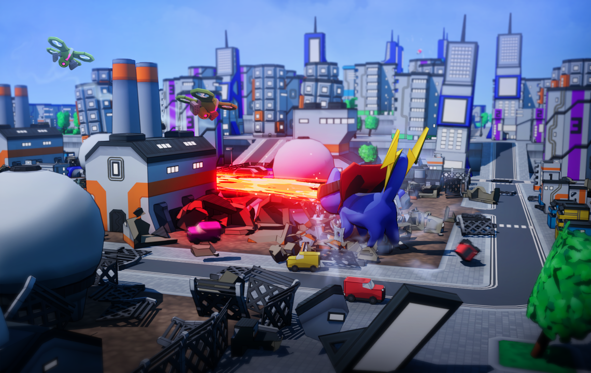
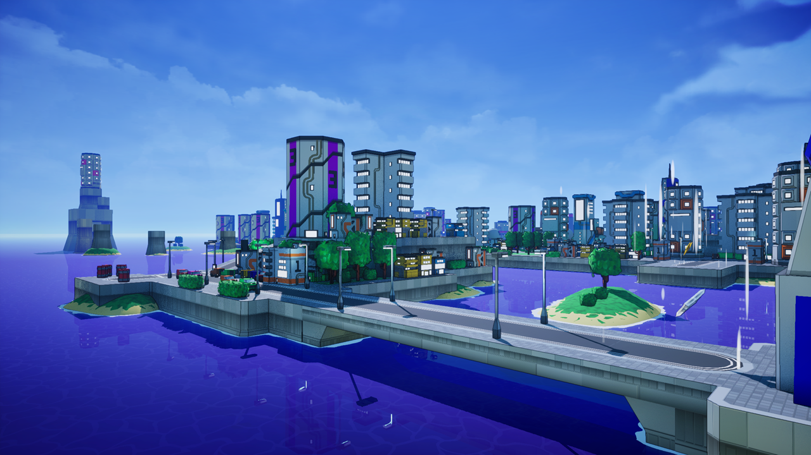
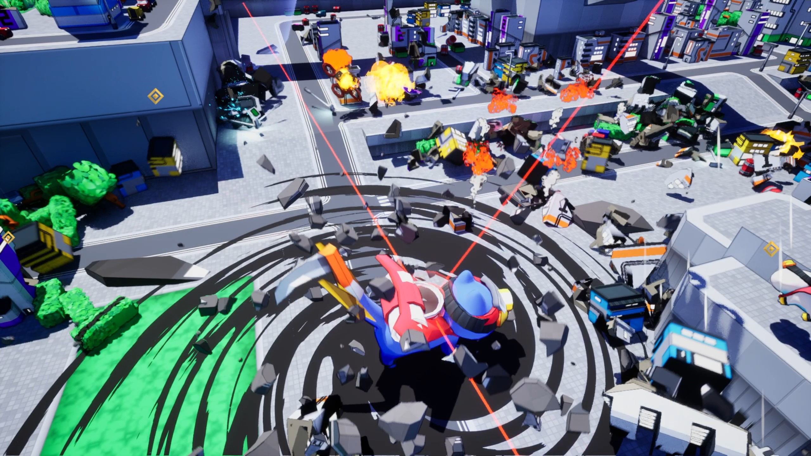
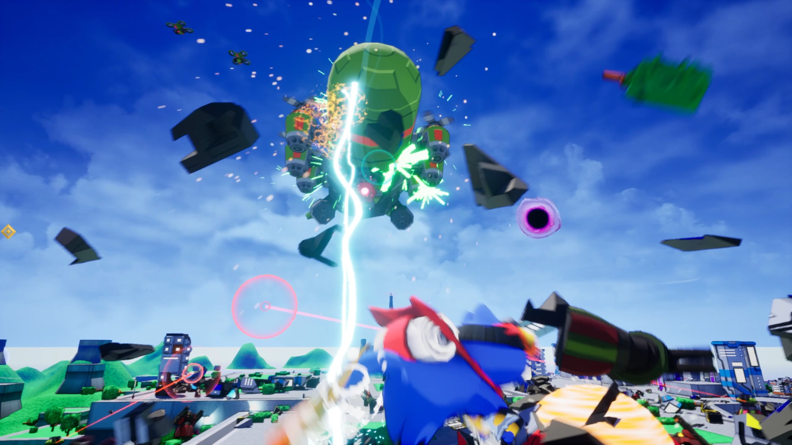

Cat-A-Strophic
Purr Point Productions





Click to Enlarge
Project description
Cat-A-Strophic is an 3D indie arcade game with roguelike elements and physics based city destruction. You play as a colossal Kaiju cat who's kittens have been stolen by an evil organisation. The objective is to rescue your kittens getting more and more powerful as you do. Using your new powers to defeat numerous enemies and even deadly bosses and destroying everything in your path. Rampaging through the city completing objectives and causing as much mayhem as possible!
This game includes:
- Over 40 abilities to mix and match for deadly effect. Including a synergy system to combine skills to make super fun combinations!
- Numerous enemies to fight against to give the game a key dynamic. Drones, turrets, shield and snipers and giant bosses!
- Physics based destruction, every building can be destroyed, and blown to pieces through various means!
- Telekinesis that lets you hurl almost everything at enemies and buildings!
Project Contribution
2024 - 2025
Graduate Programmer -> Programmer -> Lead Programmer
- What I learned:
- How to correctly use an IDE's debugging systems to hunt down bugs.
- Indepth knowledge of Unreal Engine's C++.
- How to use Unreal Engine's profiling system to assess performance.
- Indepth knowledge of Unreal Engines blueprint system.
- Professional use of github.
- How a professional developement cycle works.
- How to use asynchronous loading, soft and hard references
- How to assess the memory usage of actors
- What I contributed:
- Modified 8 existing enemy AI with new functionality or debugging
- Developed and implemented 3 new AI including freindly units
- Developed and implemented a boss entity with four different attack patterns
- Implemented or modified various UI systems from the player HUD, main menu, options menu and pause menu
- Identified several areas of the project that were causing performance issues, such as actors unnecessarily using tick, heavy functions, animation blueprints, and the use of hard referernces which were causing memory issues, then worked to quell these issues, decreasing the CPU bottleneck and increasing FPS.
- Developed or modified over 40 abilities that the player directly uses.
- Managing Github across a team
- The training and delegation of tasks to a new programming team member
- Added gamepad control to the UI systems
- Helped showcase the game at many events such as EGX, Guildford games, London games festival and more across the UK
- Took part in goverment programmes such as Tranzfuser and Dundev
- What I overcame:
- Initial lack of indepth knowledge of Unreal Engine: My time with Purr Point allowed me to dive in to the deeper parts of the engine such as profiling, debugging tools and more to continue development.
- Creating reusable, clean code: For parts of the project especially with the game mode system, it was imperative to learn how to create reusable code such as base classes and abstract functions that can be reused, cutting down on bloat and unnecessary lengths. Maintaining redable, optimised code for a physics based game was critical.
- Framerate & CPU issues: As the project went on and more content was added, especially being a physics based game the need for optimisation was great. I learned a lot from my mentor aswell as learning how to use Unreal's profiling tool to identify a specific problem that was causing heavy cpu use and was able to solve that aswell as a handful of other entities in the game.
- Taking over as Lead Programmer: After my mentor moved on from the project, I was put in charge of the programming side of development from then out, it was difficult to adjust to the new level of responsibility. I needed to now plan systems, meet the respective deadlines, control GitHub for the team and it was very jarring at first. I became adjusted to the role after some time and began to once again gain momentum with my work. Learning more and more things each week.
Bio
I joined Purr Point Productions as a graduate in 2024, my knowledge of C++ was fairly fresh and I did not know the depths of Unreal Engine and was lacking quite a lot of mathmatical knowledge and debugging skills. Under the tutorship of my Lead Programmer and mentor. I swiftly learned various techniques to allow me to truly be an important asset to the team.
I started using jetbrains rider as my personal and professional IDE from this point and with it came a lot of fun things such as being able to smoothly control git from it, aswell as offering a nice selection of easily customisable shortcuts, hotkeys and of course looking so good. I begun the project by doing small things such as transitioning code from blueprints to C++ or doing some work on UI systems and abilities.
After a while my first main task was developing the first boss. A large blimp that uses a variety of attacks to stop the player. Including Miniguns, rockets, a giant laser and later down the line I would incorparate a close range shock ability. At first it was messy and with the help of the Lead Programmer it was cleaned up quite fast and has since become my most proudest work on the project. After this, the boss was implemented into the demo and shown off at various events such as EGX, guildford games, and a few others, recieving quite positive reactions and it did seem that it was a good level of challenging at the time without being too overpowered.
For a while, I had worked on a wide variety of the systems in the project, from developing a new options menu, to working across the board on a large variety of the players abilities. I grew quite comfortable with Unreal Engine and learned quite a lot of functionality that the engine provides. We eventually took part in the DunDev programme, which meant the team spent one month in Scotland Dundee working in an office together to continue to develop the game and attempt to secure funding for the project. This was successful as we were successful and did recieve government funding for the project! That month was a highlight of my time at Purr Point as it was such an experience to be in a profressional enviroment working together to a common goal as opposed to working from home.
After some time had passed, I took over as the Lead Programmer for the project as the previous Lead had moved on. While I did not have the tremendous skillset they did, after some adjusting I found my own rythem and pace for development. It was now my role to spearhead the programming for the project, I did struggle at first, however this was the time when I begun to learn some of the more advanced things about Unreal Engine such as the asynchronous loading systems and the difference between soft and hard references for memory allocation. Unreal's profiler, how to analyse the CPU usage, fps patterns and more. Eventually when we took on a new programmer, I was responsible for teaching them Unreal Engine and delegating tasks. I found myself becoming quite confident in my skills. Working closely with the designers, artists, and producer I could help take the project further.